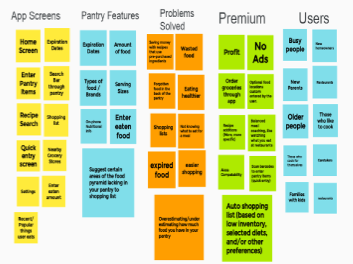
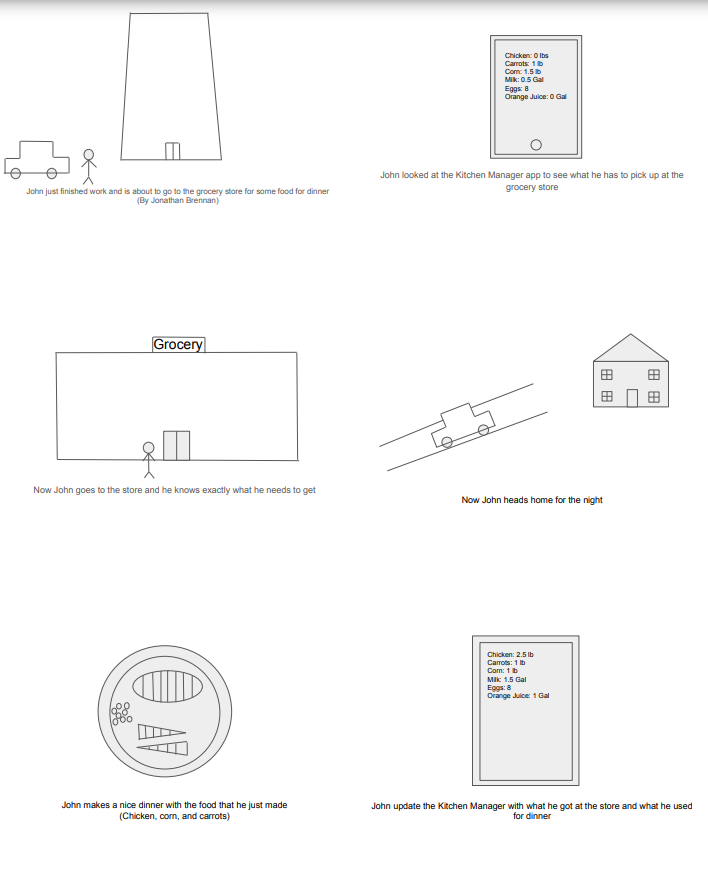
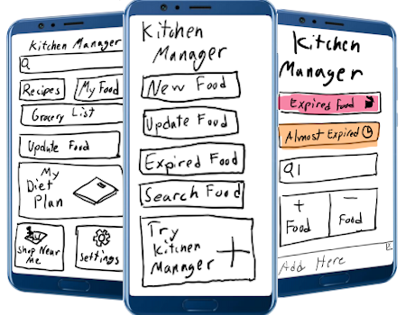
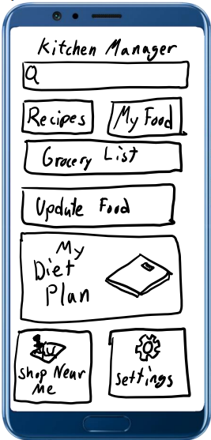

Problem Statement: Pantry Problems

Adults are having to keep track of what food items they have, how much of that item they have, and when it expires. This app will allow the user to keep track of all that information wherever they are.
Affinity Diagram
 My group and I worked to make a stress free pantry tracker.Personas
We created 4 different personas to represent the type of people that would use this app.Storyboards
 We created different storyboards showing how people would use the app.App Sketches
 We created different App Sketeches showing how the app might look.Paper Prototype
 A brief walktrough of the functions of the Kitchen Manager app.Usability Testing
 A scenario of a possible user and some of the tasks that they would use. It also contains some of things that needs to change about the app and things that should stay the same.
A scenario of a possible user and some of the tasks that they would use. It also contains some of things that needs to change about the app and things that should stay the same.